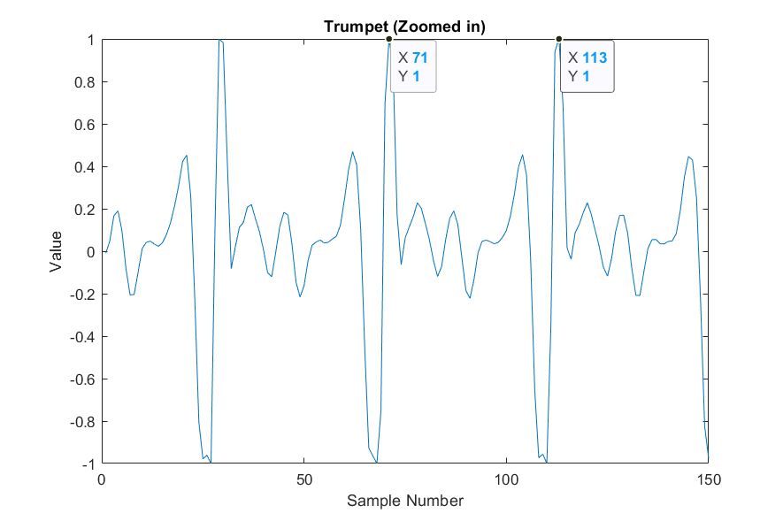
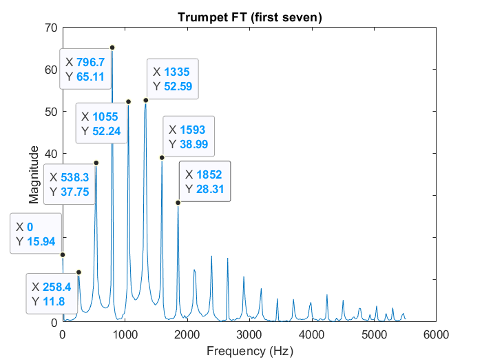
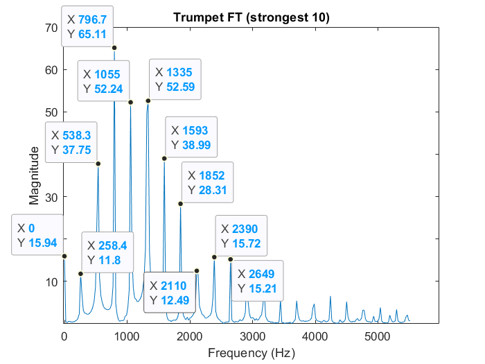
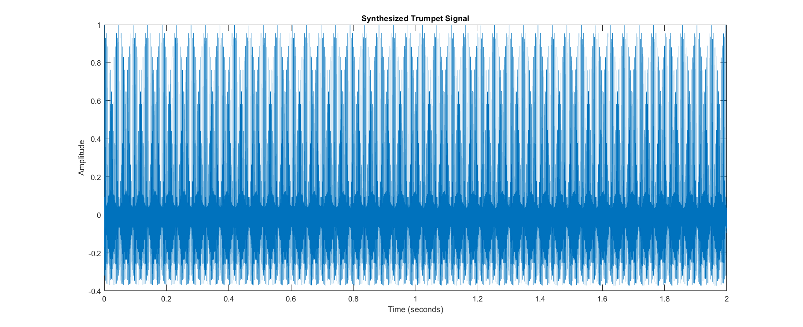
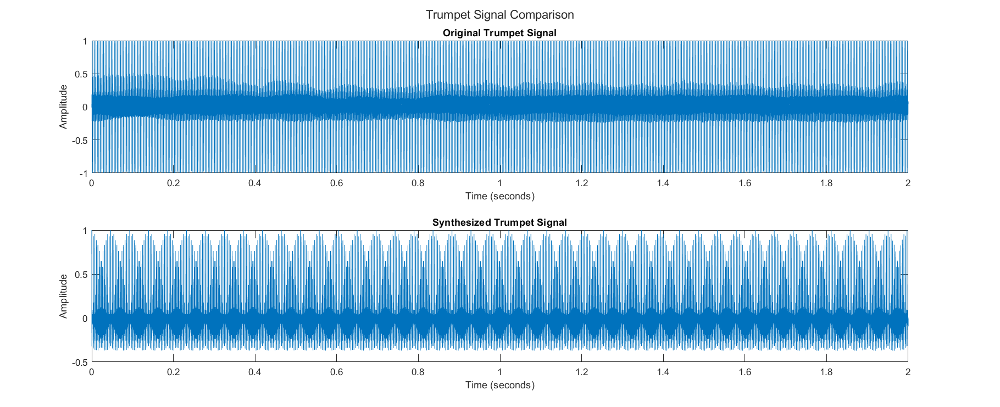
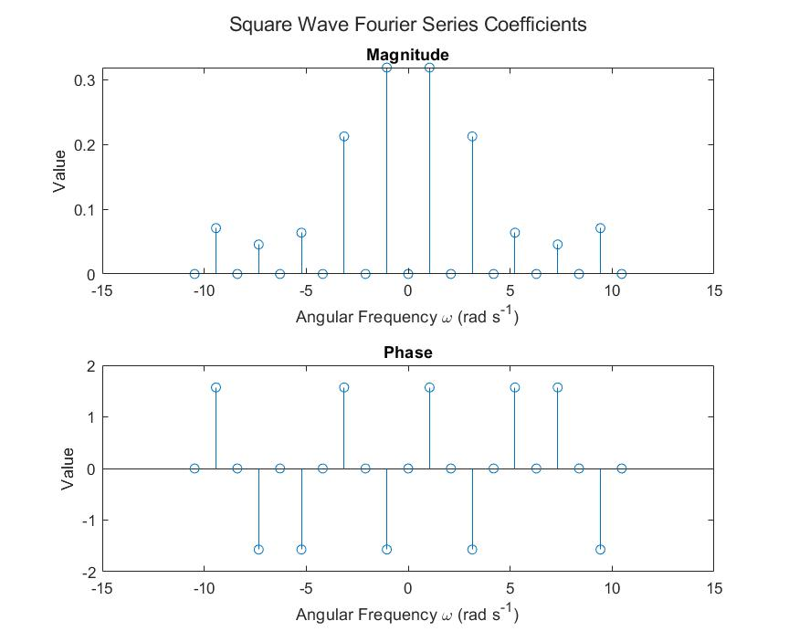
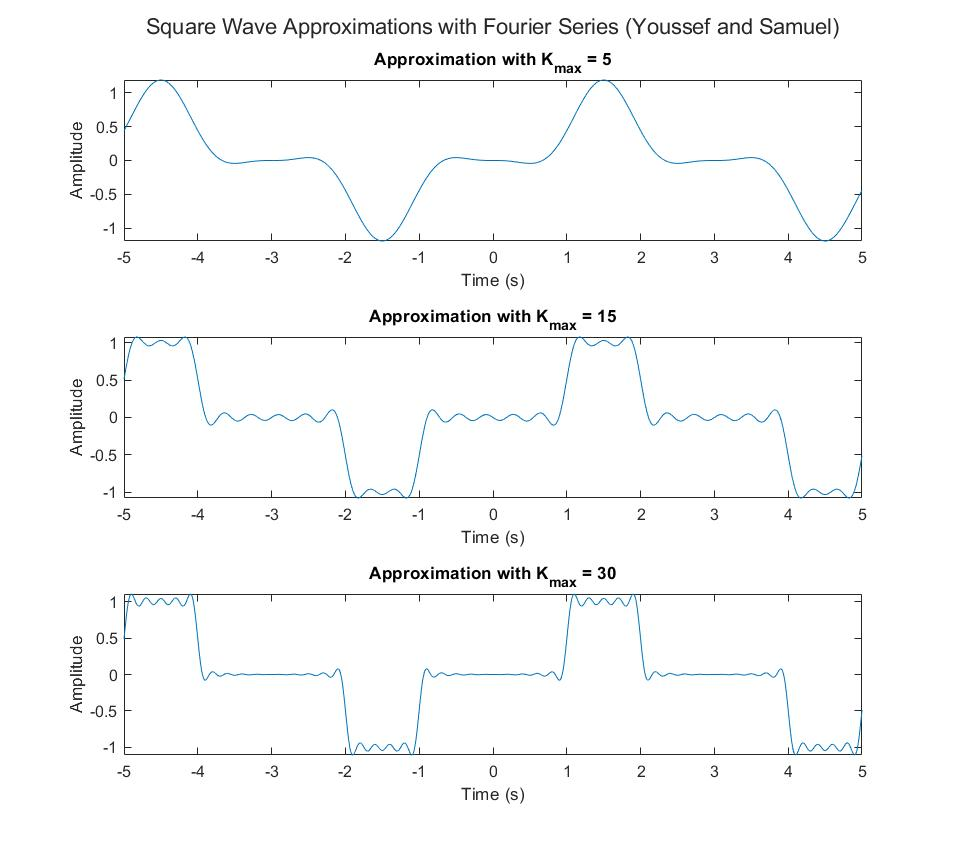

.png)
In this lab, we analyze a couple of signals and synthesize them using the fourier series. We analyzed a trumpet sound and a square wave signal. We observed and recorded how synthesized signals fare compared to original ones.
In this section we analyze and synthesize a trumpet sound using fourier series.
After loading and plotting the pre-recorded trumpet sound signal onto a graph, we measured the coordinates of two different peaks.

| Peak No. 1 | Peak No. 2 | Period (# of samples) | F0(Hz) = Fs/(#of samples) |
|---|---|---|---|
| X1 = 71, Y1 = 1.0000 | X2 = 113, Y1 = 1.0000 | |X2−X1| = 42 | F0 = 11025/42 = 262.5 Hz |
The difference between the two peaks is 42 samples. With a sample rate of Fs = 11025 Hz, the difference is 262.5 Hz.
We then applied the Fourier transform on the trumpet signal and measured the magnitudes and frequency of the first seven harmonic peaks. We also included the 0th harmonic (the integral average) for reference.

| Harmonic | Magnitude | Frequency (Hz) | Frequency Diff (Hz) |
|---|---|---|---|
| 0 | 15.944 | 0 | N/A |
| 1 | 11.795 | 258.398 | 258.398 |
| 2 | 37.749 | 538.330 | 279.932 |
| 3 | 65.114 | 796.729 | 258.399 |
| 4 | 52.244 | 1055.13 | 258.40 |
| 5 | 52.593 | 1335.06 | 279.93 |
| 6 | 38.994 | 1593.46 | 258.40 |
| 7 | 28.305 | 1851.86 | 258.40 |
The mean of these differences is F0 = 264.55 Hz and the median of these differences is 258.40 Hz. The percent differences compared to our first estimation of 262.5 Hz is 0.78% and 1.6% for the mean and median respectively. The percent differences are small so the mean and median align well with our first estimate.
The harmonics all have frequencies which are multiples of F0 = 264.55 Hz (approximately). So the average difference between two harmonics is 264.55. It seems musical sounds are made of multiple harmonics and not just one.
Here is the code used in analysis.
To synthesize a new trumpet signal, we recorded the 10 strongest (in magnitude) harmonic peaks. We ignored the 0th harmonic (when the frequency is 0 Hz) because it will just make the sound louder without making it more intelligible and matlab will attenuate the larger magnitude. We did try adding the 0th harmonic, but it didn’t make the sound any better.

| Peak | Magnitude | Frequency (Hz) |
|---|---|---|
| 1 | 65.114 | 796.729 |
| 2 | 52.593 | 1335.06 |
| 3 | 52.244 | 1055.13 |
| 4 | 38.994 | 1593.46 |
| 5 | 37.749 | 538.33 |
| 6 | 28.305 | 1851.86 |
| 7 | 15.724 | 2390.19 |
| 8 | 15.208 | 2648.58 |
| 9 | 12.487 | 2110.25 |
| 10 | 11.795 | 258.398 |
We then created a matlab script that summed up 10 sine waves into a 2 * Fs-long vector to synthesize a 2-second long trumpet signal.
The synthesized signal sounded much like the pre-recorded trumpet signal but had zero variance in tone. The synthesized signal sounded monotonic and had a weird ringing sound. The synthesized signal may sound better if more harmonics are added.
Below is the synthesized signal. It is periodic and doesn’t have any variation. It still has a sinusoidal form.

Compared to the original signal, the synthesized signal is missing components. The synthesized signal seems to mostly contain the dense central part of the original which you can see in the image below. The other frequencies are truncated.

When we zoomed into the signals, it is clear the two signals are not in phase. This is because we only used the magnitudes of the coefficients for the fourier series and didn’t consider the phase.
The original signal appears smoother than the synthesized signal. The original signal has values in the range of [-1,1] but the synthesized signal only has values in the range of [-0.5,1]. The original signal has negative peaks of bigger magnitude than the synthesized signal. All of these points illustrate how the synthesized signal is missing most components of the original. Yet, the synthesized signal is adequately similar to the original for us to identify it.
In this section, we synthesized a square wave signal using a fourier series. When the number of coefficients is low, the synthesized signal displays the Gibbs phenomenon where the signal overshoots and undershoots at sharp transitions.
We generated and plotted the Ck coefficients of the fourier series we used to synthesize the square wave.
Below you can see the magnitudes and phases of the coefficients.

We developed a function that generates an approximation of a square wave given the time of the signal and the Kmax of the coefficients.
We plotted the output from our synthesizing function. Clearly as Kmax increases, the synthesized signal becomes more similar to the original.

The plots didn’t demonstrate the phenomenon enough, so we wrote a script to generate a video of the synthesized signal as kmax increases.
When Kmax is less than 500, the Gibbs phenomenon is clear. The signal rings (overshoots and undershoots) at sharp transitions.
Between Kmax = 400 and Kmax = 500, the ringing decreases. When Kmax rises above 500, the Gibbs phenomenon disappears. After that it appears again; then it disappears again; then it appears again, and the process repeats.
We used the fourier transform to analyze a trumpet sound. We then used the strongest harmonics of the trumpet to synthesize a trumpet sound using the fourier series. By summing cosines mapping to the highest-magnitude harmonics, we can generate a signal that mimics the timbre of a sound piece.
We synthesized a square wave using its fourier series coefficients and compared it to the original signal. Fourier series can be used to generate signals with sharp transitions.
Because the synthesized signals are truncated fourier series, they have some issues like the Gibbs phenomenon or imperfect representations of the signal. The synthesized trumpet sound has zero variance in tone and is not able to replicate any “wibbly-wobbly” sound that appears because of smaller frequencies in the sample. The square wave displayed the Gibbs Phenomenon even when hundreds of frequencies were used.
Nonetheless, a Fourier series can generate sound tables that can be used by synthesizers and other digital audio tools as a base for instruments.